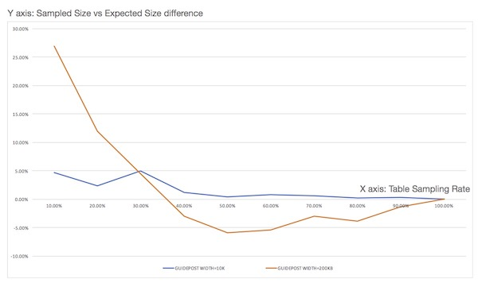

Table Sampling
To support table sampling, similar to the Postgresql and T-SQL syntax, a TABLESAMPLE clause has been encorporated into the table aliases ref as of Phoenix 4.12. The general syntax is described here. This feature limits the number of rows returned from a table to a PERCENT of rows. See PHOENIX-153 for implementation details.
This feature is implmented with a Bernoulli trial, a consistent-hashing based tablesampler, to achieve a Bernoulli sampling on a given population (rows). When executed, given a sampling rate, it leverages Phoenix’s stats as well HBase’s region distribution to perform a table sampling.
As part of the statistics collection, a guide post (a row referrence) is created for rows at equidistant bytes from each other. When sampling is required, a Bernoulli trial process is applied repeatedly on each guide post on each region with a probability that porportional to the sampling rate. A included guide post will result in all the rows in between this and next guide post being included into sample population.
Performance
Sampling on a table with a sampling rate = 100% will cost same amount of computational resource as a query without sampling. This resouces consumption quicky fall off when a smaller sampling rate is choosing. In general, the amortized complexity for sampling process is O(k + mn) , with n being the number of the regions of the sampled hbase table, m being the number of guide posts, and k being the size of sampled population.
Repeatable
Repeatable means it guarantees that the repeated sampling on the same table will resulted in the same sampled result.
Repeatable feature is made possible by a consistent-hashing process applied on the binary representation of the start rowkey of each guideposts of each region when sampling process is in action. During hashing, a FNV1 implementation with lazy mod method is adopted by default. see FNV1.
Examples
For example, to tablesample a table , you would execute the following command. Please note, the sampling rate is a numeric value between 0 and 100, inclusive.
select * from PERSON TABLESAMPLE(12.08);
Some more examples:
select * from PERSON TABLESAMPLE (12.08) where ADDRESS = 'CA' OR name>'aaa'; select count( * ) from PERSON TABLESAMPLE (12.08) LIMIT 2 select count( * ) from (select NAME from PERSON TABLESAMPLE (49) limit 20) select * from (select /+NO_INDEX/ * from PERSON tablesample (10) where Name > 'tina10') where ADDRESS = 'CA' select * from PERSON1, PERSON2 tablesample (70) where PERSON1.Name = PERSON2.NAME select /+NO_INDEX/ count( * ) from PERSON tableSample (19), US_POPULATION tableSample (28) where PERSON.Name > US_POPULATION.STATE upsert into personbig(ID, ADDRESS) select id, address from personbig tablesample (1);
To use it in aggregation:
select count( * ) from PERSON TABLESAMPLE (49) LIMIT 2 select count( * ) from (select NAME from PERSON TABLESAMPLE (49) limit 20)
To explain the query:
explain select count( * ) from PERSON TABLESAMPLE (49) LIMIT 2)
Tuning
-
Due to sampling process, the TABLESAMPLE clause should be used with some caution. For example, a join of two tables is likely to return a match for each row in both tables; however, when tablesampling process is applied on either one or both of the two tables, the joining may not match the expectation when without sampling.
-
The stats needs to be collected in order to achieve the best sampling accuracy. To turn on statistics collection, refer to Statistics Collection.
ALTER TABLE my_table SET GUIDE_POSTS_WIDTH = 10000000
